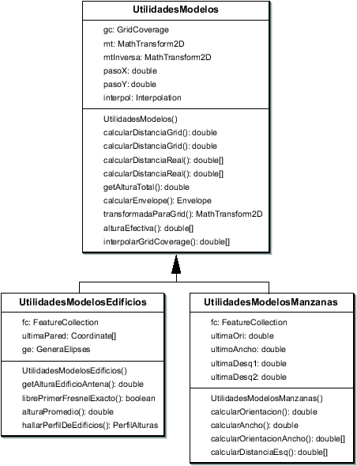

Siguiente: El paquete ifusuario
Subir: Arquitectura de paquetes
Anterior: El paquete red
Índice General
Dentro de este paquete se encuentra todo lo relativo al cálculo y
análisis de predicciones. Para la implementación de los modelos de
predicción se buscó un diseño que facilite al desarrollador el
agregado de nuevos modelos al programa. Es así que se creó la clase
abstracta Modelo, de la cual heredan todas las
implementaciones particulares (ver figura 8.8). Dicha
clase determina todos los atributos y métodos que debe implementar
un modelo de propagación para poder integrarse con el resto de la
arquitectura.
Figura 8.8:
Diagrama parcial de la clase Modelo
|
|
Cada modelo se define mediante dos tipos de parámetros, los
parámetros ajustables y los no ajustables. Los
primeros, son aquéllos que el desarrollador considera pueden ser
ajustados mediante regresión lineal en el caso de contar con medidas
de campo. Básicamente son los que aparecen con una dependencia
lineal en la ecuación de pérdida de camino (en dB), y se representan
como un arreglo de doubles. Luego, el resto de los parámetros
son los no ajustables, como por ejemplo el tipo de entorno (urbano,
suburbano, etc.), y se representan como un arreglo de Objects
a fin de dar libertad de usar cualquier tipo de objeto. Se diseñó de
esta manera, distinguiendo entre dos tipos de parámetros para
facilitar una futura implementación de ajuste de modelos en base a
medidas.
Todos los modelos deben disponer de los valores de los parámetros
por defecto; luego cada implementación en particular podrá utilizar
dichos valores u otros que especifique (siempre y cuando tengan el
formato adecuado). Es por esto que existen dos constructores para la
clase Modelo, uno para cada uno de estos casos. Además deben
implementar la creación de la ventana que sirva como interfaz para
especificar los parámetros del mismo; dicha ventana debe heredar de
la clase abstracta PanelModelos, en donde se especifican los
métodos que debe implementar.
El método encargado de realizar los cálculos de atenuación de señal
es el método predecir de la clase Modelo. Previo a realizar
ningún cálculo invoca al método verificarDatos, que se
encarga de chequear que el mapa contenga las capas que necesita el
modelo, y en ese caso obtiene el areaCalculable (región en el
mapa sobre la cual pueden efectuarse los cálculos; depende del mapa
y de la ubicación de la radiobase). Para el manejo de herramientas
comunes a todos los modelos se creó la clase
UtilidadesModelos, que implementa entre otras cosas el
cálculo de distancia y de alturas efectivas. Si está habilitada la
opción de usarInterpolación los valores de altura de terreno
se obtienen mediante interpolación bilineal en el GridCoverage.
UtilidadesModelos debe tener en cuenta que existen dos niveles
diferentes en los cuales se puede referenciar un punto: mediante su
posición dentro de la grilla de datos o mediante sus
coordenadas ``reales''  en el mapa; el pasaje de un sistema
de referencia a otro lo hace mediante una transformación matemática
(org.geotools.ct.MathTransform2D).
El método predecir necesita de los siguientes datos de entrada:
en el mapa; el pasaje de un sistema
de referencia a otro lo hace mediante una transformación matemática
(org.geotools.ct.MathTransform2D).
El método predecir necesita de los siguientes datos de entrada:
- El mapa, que contiene las diferentes capas con los datos del entorno
- La antena trasmisora, de la cual se obtienen los datos de potencia de trasmisión,
ganancia y frecuencia.
- El proyecto, a fin de obtener el perfil de usuario, el sitio y la radiobase asociados a la
antena trasmisora
- El radio máximo en torno a la antena
- La precisión con la que se realizarán los cálculos
Devuelve los resultados mediante un objeto del tipo
PrediccionUniAntena (ver figura 8.9), que contiene básicamente una Grilla con
los valores de potencia y los datos de la antena con que fue
realizada. Quien llama a este método es la clase
ThreadCalculaAtenuacion, creada para que el cálculo de
predicción pueda correr en paralelo con el thread que
mantiene el avance de la barra de progreso de la interfaz gráfica.
Esta clase va almacenando los resultados obtenidos con cada una de
las antenas para formar una PrediccionMultiAntena (ver figura 8.9).
La clase PrediccionMultiAntena es la encargada de formar las grillas
de potencia a desplegar en pantalla, eligiendo el valor de potencia
máximo en los puntos donde tenga información de más de una antena,
así como también de crear las grillas de cobertura y de
interferencia co-canal.
Figura 8.9:
Diagrama parcial de clases del paquete
predicciones
|
|
Las clases UtilidadesModelosManzanas y
UtilidadesModelosEdificios heredan de
UtilidadesModelos y centralizan los métodos
particulares requeridos en la implementación de algunos de los
modelos de propagación disponibles en la herramienta (ver figura
8.10). UtilidadesModelosManzanas contiene los
cálculos asociados a la capa de manzanas, como ser la
orientación de las calles, el ancho de las mismas y las
distancias a las esquinas. Por su parte, UtilidadesModelosEdificios
contiene los métodos que necesitarán aquellos modelos que hagan uso
de la capa de edificios y dentro de los más importantes se hallan:
altura promedio de edificios circundantes al móvil, determinación de
obstrucción de la primer elipsiode de Fresnel, y obtención del
perfil de alturas entre el móvil y la antena transmisora. Es
importante destacar que en caso de querer implementar un nuevo
modelo que requiera algún algoritmo particular, bastaría con agregar
un método nuevo en las clases anteriormente detalladas.
Figura 8.10:
Diagrama parcial de clases del paquete
predicciones
|

|
Siguiente: El paquete ifusuario
Subir: Arquitectura de paquetes
Anterior: El paquete red
Índice General
SAPO